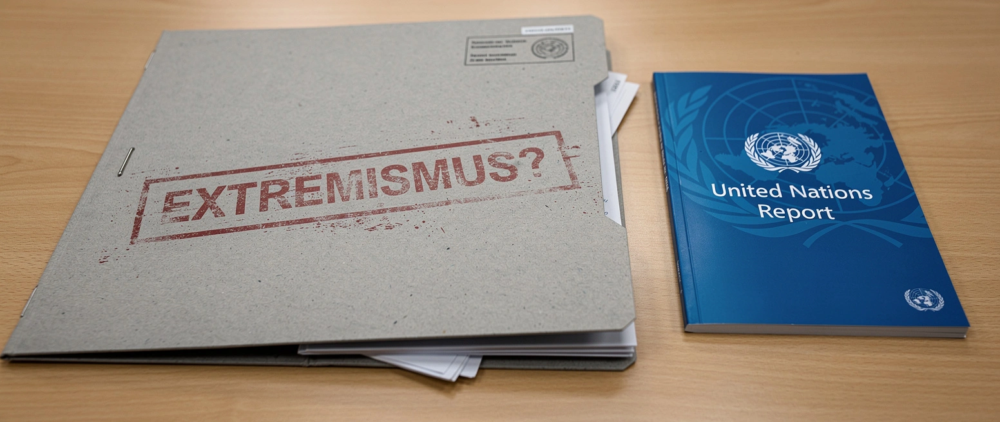

Sogar die UN sagt es

Wenn die Vereinten Nationen Deutschland ermahnen, denkt man an Kriegsverbrechen oder Hungersnöte. Diesmal geht es um die Meinungsfreiheit.
Irene Khan, UN-Sonderberichterstatterin für Meinungsfreiheit, war im Frühjahr zwölf Tage im Land. Ihr Bericht liegt nun dem UN-Menschenrechtsrat vor. Der Befund: „Der Spielraum für die Meinungsfreiheit in Deutschland schrumpft.“
Ins Visier nimmt sie den Verfassungsschutz. Sein Begriff von „Extremismus“ habe keine klare gesetzliche Grundlage, keine präzise Definition. Eine Behörde, die ohne scharfe Grenze bestimmt, was extremistisch ist, stigmatisiert legitime Meinungen und verengt die Debatte. Khans Beispiele: verstärkter Ehrschutz für Amtsträger, pauschale Verbote von Parolen, die Beobachtung von Organisationen auf vager Grundlage.
Es ist derselbe Verfassungsschutz, der gerade mehr Befugnisse bekommen soll: Wohnungen betreten, Übertragungsinhalte verändern, Betroffene nichts davon erfahren lassen. Die UN warnt vor der Behörde, während der Gesetzgeber sie aufrüstet.
Die Bürger spüren es ohnehin. Nur rund 40 Prozent sagen bei Allensbach, man könne seine politische Meinung frei äußern, der niedrigste Wert seit 1953.
Als vor einem Jahr das US-Außenministerium Deutschlands Umgang mit der Meinungsfreiheit rügte, war die Antwort des Gebührenfunks schnell zur Hand: kultureller Unterschied, der Vorwurf sei „sehr mächtig“, die Sorge verfrüht. Die Kritik kam ja von Trumps Leuten. Diesmal kommt sie von der UN. Als Rechtspopulismus lässt sich das schwerer verbuchen.
Khan ist keine deutsche Oppositionelle, keine Partei, kein „rechtes Blatt“. Sie ist die Instanz, die die UN für Meinungsfreiheit bestellt hat. Wer diesen Bericht abtun will, muss die UN abtun.
Ein Verfassungsschutz, der nicht sagen kann, was Extremismus ist, kann jeden dazu erklären. Genau das nennt die UN jetzt beim Namen.
Mehr dazu: Meinungsfreiheit mit Grenzen.